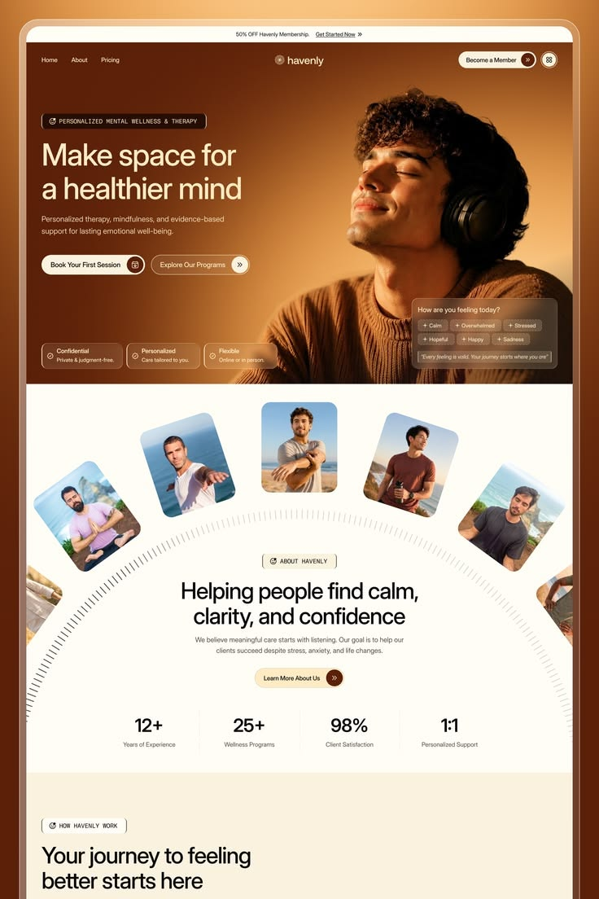
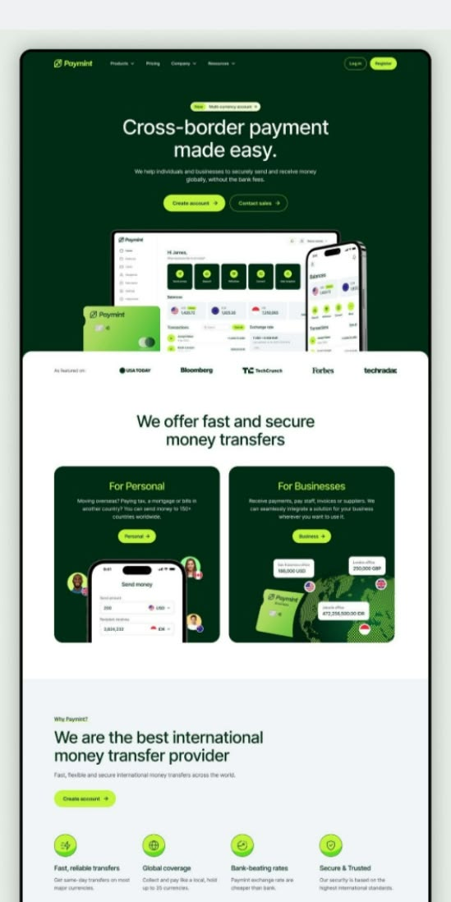
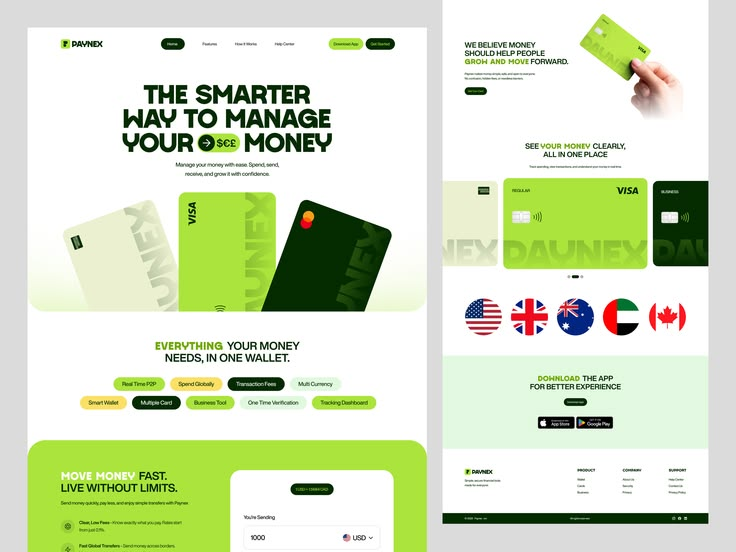
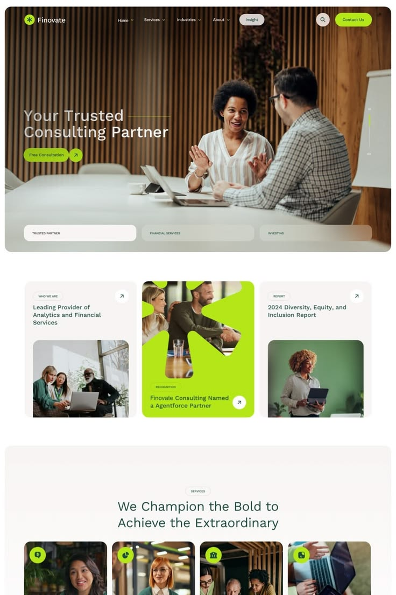

Direção
Criativa.
Transformar obrigação fiscal em agendamento rápido no WhatsApp.
Para pessoas físicas e empresas que precisam emitir ou renovar certificados A1 e A3 sem fila nem burocracia.
Separar A1 PF, A1 PJ, A3 PF e A3 PJ sem jargão técnico.
Mostrar validade ICP-Brasil somada ao suporte humano real.
Levar direto ao WhatsApp da equipe para agendar a videoconferência.
Sua identidade digital pronta
sem sair da rotina.
Autoridade escura
no topo e leitura
leve no corpo.




As cores da logo organizando confiança e ação.
Fundo principal de leitura (60%)
Abertura e fechamento
Botão principal e ação
Credenciais e apoio PJ
Selo de validação ativa
Emita seu certificado por videoconferência sem fila.
Certificados e-CPF e e-CNPJ nos modelos A1 e A3 com validade jurídica em todo o Brasil e conferência prévia pelo WhatsApp.
O Cartão de Validação Solar sobre a cena humana.
Emita ou renove por videoconferência com suporte humano.
O que sustenta a direção
- Selo flutuante com luz dourada do sol da logo sobre foto real
- Quatro cartões-credenciais tangíveis para A1 PF, A1 PJ, A3 PF e A3 PJ
- Alternância entre marinho profundo e fundo claro descomplicado
O que fica de fora
- Tabelas quadradas com aparência de sistema antigo do governo
- Formulários longos ou robôs antes de falar no WhatsApp
- Cadeados 3D neon ou ilustrações genéricas de banco de imagem
Materializar o certificado invisível e mostrar quem atende.
Na abertura: foto panorâmica de fundo ocupando a tela de ponta a ponta.
Na seção de certificados: cartões gráficos diferenciando arquivo digital e mídia física.
Sobre a abertura: tarjeta flutuante com o sol dourado da marca LT.
Nos pilares de segurança e passos: traço contínuo de 2px em verde e dourado.
Fica de fora: ilustrações 3D abstratas de cadeados ou redes cibernéticas, que esfriam a relação humana.
Sete seções de ponta a ponta guiando ao WhatsApp.
Imagem de fundo de ponta a ponta, véu marinho, título em linhas e selo solar.
Grade ampla de ponta a ponta com 4 cartões-credenciais (A1 PF, A1 PJ, A3 PF, A3 PJ).
Painel largo contrastando local de guarda, validade e rotina de uso.
Painel preso à esquerda enquanto os 3 passos da videoconferência rolam à direita.
Imagem revelada por cortina suave ao lado dos 4 pilares oficiais ICP-Brasil.
Coluna de chamada à esquerda e 4 respostas com abertura suave à direita.
Bloco marinho de ponta a ponta com destaque solar, botão magnético para o WhatsApp e rodapé enxuto.
Da direção aprovada
ao site no ar.
Você valida ou ajusta este documento visual.
Construímos e aprovamos a página sem imagens finais; depois geramos e integramos os assets.
Seu olhar ajusta os detalhes finais antes da entrega empacotada.